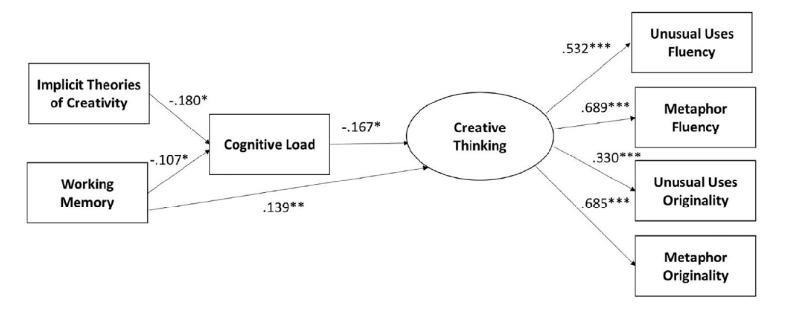

Implicit Theories, Working Memory, and Cognitive Load: Impacts on Creative Thinking

Creative thinking shares many characteristics with traditional complex tasks. We investigated whether implicit theories of creativity would affect creative thinking in a way similar to the impact of implicit theories of intelligence on academic tasks. We altered participants’ theories of creativity to be either more incremental or more entity-like. We also examined the impact of working memory (WM) and cognitive load on creative thinking. Cognitive load fully mediated the relationship between implicit theories and creative thinking, with more incremental beliefs linked to lower cognitive load. In addition, cognitive load partially mediated the relationship between WM and creative thinking. Our results support prior research showing that creative thinking draws on cognitive mechanisms similar to those utilized by other complex tasks, but the impact of implicit theories on creative thinking differs from their effect on traditional academic tasks.